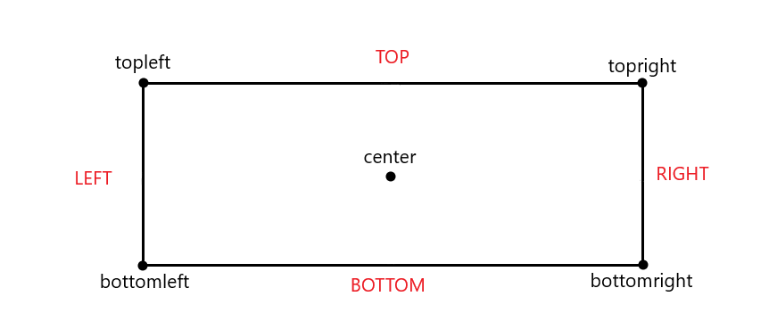
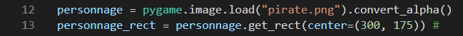
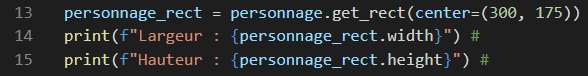
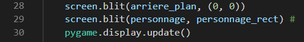
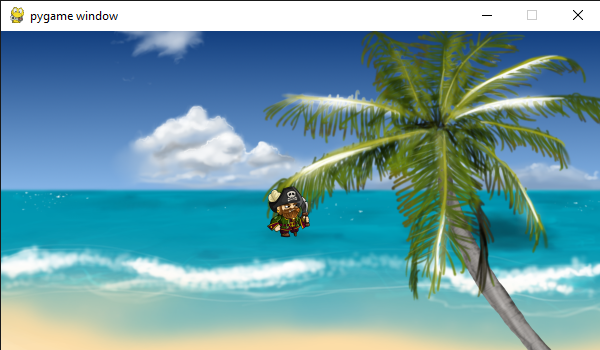
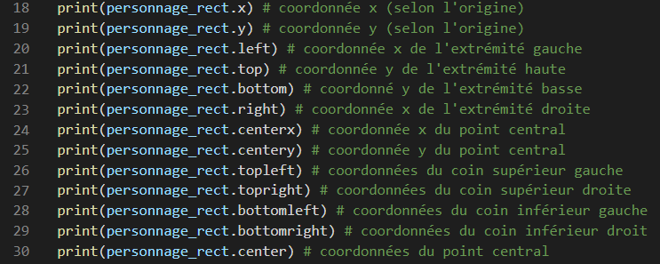
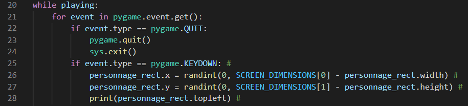
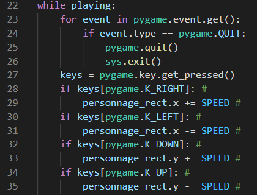

Qu'est-ce qu'un rectangle ?
Un rectangle est une "boîte" que l'on dessine autour de surfaces. Les rectangles sont notamment utiles pour positionner une élément ou détecter une collision avec un point (x; y) ou un autre rectangle. Quand on définit un rectangle, on définit également sa position sur l'écran. Sa position peut être définie par rapport à différents points du rectangle : son coin supérieur gauche (topleft), son coin supérieur droit (topright), son coin inférieur gauche (bottomleft), son coin inférieur droit (bottomright), et enfin son centre (center)
Ainsi, lorsqu'on définit un rectangle grâce à la méthode get_rect(), on l'associe à une surface et on définit sa position par rapport au point désiré dans les parenthèses. Essayons par exemple d'obtenir un rectangle autour de notre personnage et stocker le résultat obtenu dans une variable :
/ Désormais, toute nouveauté que l'on ajoutera à notre code sera spécifiée par un # à la fin de la ligne /
Et voilà ! Nous venons de créer notre tout premier rectangle. Plusieurs choses sont à noter. Premièrement, le centre de notre rectangle est positionné en (300; 175), on repère cela grâce à l'instruction center=(300, 175). Deuxièmement, notre rectangle n'a pas besoin d'être affiché à l'écran car les rectangles de Pygame sont invisibles. Troisièmement, les dimensions du rectangle correspondent à celles de sa surface d'origine, içi celles de personnage et donc de l'image pirate.png. Nous pouvons vérifier les dimensions de notre rectangle grâce aux attributs width et height d'un objet rectangle. Donc, si nous écrivons :
Cela devrait afficher les dimensions de notre rectangle dans le terminal. Si nous vérifions les dimensions de l'image utilisée pour notre personnage, nous constaterons que celles-ci sont identiques. Le principe de notre rectangle cependant est que la surface qui lui est associé doit être à la même position. La surface doit suivre son rectangle. Cela peut être résolu très simplement en remplacant le tuple de coordonnées par le rectangle correspondant dans l'instruction blit qui dessine sa surface associée. Testons cela pour notre personnage :
  CodeRésultatNotre personnage est ainsi placé aux coordonnées du rectangle ! Et comme nous pouvons le constater, notre personnage est enfin au centre de l'écran ! Mais les rectangles peuvent faire encore mieux !
Déplacer un rectangle
Et si nous réessayons de déplacer notre personnage ? Mais en utilisant les rectangles cette fois bien sûr ! Précèdemment, nous avons créé une variable pour stocker la coordonnée y du personnage. Mais cette fois ci, cela ne sera pas nécessaire. En effet, en plus des attributs width et height qui permettent de récupérer les dimensions du rectangle associé, un rectangle possède plusieurs attributs nous permettant de récupérer des coordonnées à certains de ses points :
En exécutant ces instructions, nous remarquons que x = left et y = top. Donc, (x; y) = (left; top) = topleft. Et nous savons déjà à quoi ces égalités sont associées. En effet, rappelons-nous que le point 0 (l'origine) de tout élément en Pygame est situé en son coin supérieur gauche. Mais revenons à nos déplacements. Un déplacement d'un rectangle consiste simplement à modifier ses coordonnées, c'est-à-dire modifier la valeur d'un des attributs çi-dessus. Par exemple, personnage_rect.x = 0 déplacera le personnage tout à gauche. Do it yourself now! Vous allez le faire par vous-même maintenant. Les consignes sont les suivantes :
- Faites des recherches sur la gestion des évènements de Pygame. A quoi correspond pygame.KEYDOWN ?
- Utiliser pygame.KEYDOWN à l'intérieur de la boucle évènementielle.
- Ecrivez les instructions nécessaires pour que notre personnage prenne une position aléatoire à chaque fois qu'on appuiera sur une touche du clavier.
 _Survoler pour
voir la correction
Qu'est-il écrit dans cette correction ? Tout d'abord, nous avons utilisé le test if event.type == pygame.KEYDOWN. Ainsi, chaque fois que l'évènement KEYDOWN aura lieu, les coordonnées du rectangle que notre personnage suit prendront une valeur aléatoire. Les limites numériques à l'intérieur de randint n'ont pas été choisies au hasard cependant. L'expression utilisée est de la logique pure et simple car on exploite les dimensions de l'écran et du rectangle de telle sorte que le rectangle ne soit jamais en dehors de l'écran. A la fin on affiche les nouvelles coordonnées obtenues en se souvenant que topleft = (x; y).
Mais saviez-vous ce qui serait encore plus cool ? Pouvoir controler notre personnage grâce aux flèches directionnelles. Alors, supprimons ce que nous venons d'ajouer et essayons d'écrire ceçi à la place après la boucle évènementielle :
 CodeRésultatLa ligne 27 : keys = pygame.key.get_pressed() permet de détécter si une touche du clavier est pressée. Quelle différence avec pygame.KEYDOWN ? Pour pygame.KEYDOWN, c'est l'action d'appuyer sur une touche qui exécutera l'évènement. Tandis que pour pygame.key.get_pressed(), c'est l'action de maintenir une touche qui activera l'évènement continuellement. Ainsi en supposant que nous utilisons pygame.KEYDOWN, si on maintient la flèche gauche par exemple, notre personnage ne se déplacera qu'une seule fois jusqu'à ce que la flèche gauche soit relâchée pour pouvoir ré-appuyer dessus à nouveau au lieu de continuer de se déplacer vers la gauche. Ce problème est immédiatement réglé avec pygame Vous pouvez vous-même faire des tests pour vérifier cela. Notons également que SPEED est une constante définie au début du programme qui correspond à la vitesse de déplacement de notre personnage. Autrement, pygame.K_RIGHT / K_LEFT / K_BOTTOM / K_TOP sont toutes les quatres des constantes de Pygame représentant chacune une touche du clavier. Par ailleurs, toutes les constantes du module Pygame qui représentent une touche du clavier commencent par "K_", K signifiant key, touche de clavier en français. INSERER RESULTAT RENVOYE PAR GET_PRESSED(). N'oublions pas l'essentiel, ces instructions ont pour but de nous permettre de déplacer le personnage. Nous réussissons à réaliser cela en modifiant les coordonnées de son rectangle. On incrémente ou décrémente ses attributs x et y d'un nombre SPEED selon la flèche pressée.